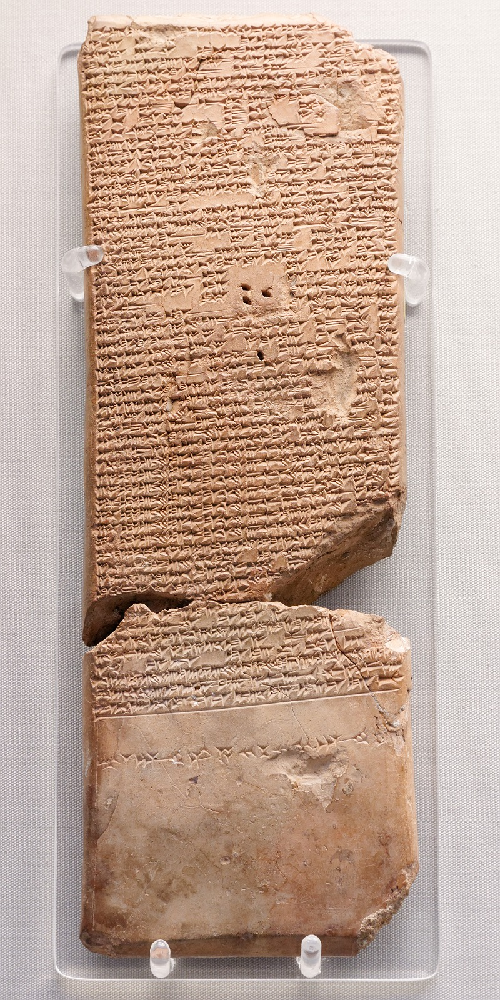

In my research into Joseph Campbell, I was directed to the Sumerian poem The Descent of Inanna, (circa 1900-1600 BCE) as a potential example of the monomyth. I decided to look into this poem as it featured a woman protagonist/hero and I wanted to understand how women heros had been represented historically. The stoy, upon first reading, makes little obvious sense to a modern reader, especially one not aquainted with other ancient texts, in particular, The Epic of Gilgamesh (circa 2100-1000 BCE). In the poem, Inanna, a goddess of the heavens, descends into the underworld to attend her brother-in-law's funeral, and as she does, her sister instructs that she be stripped of her wealth and finery. When she is finally received by her sister, she is judged and killed, and hung like rotting meat on a hook on the wall #texaschainsawmassacre. Her father ends up saving her, but this costs the life of Inanna's husband and his sister, who take her place in the underworld.
Why would Inanna's sister kill her and hang her up. just for trying to attend her brother-in-law's funeral? This question is answered in Gilgamesh, where Inanna is directly responsible for her brother-in-law's death. This story is, I believe, ultimately about injustice and served as a salve to people in ancient Mesopotamia, by demonstrating that injustices are felt by the god's (aka. Inanna's sister), just as they are felt by mortals. To me, this story was a reminder that Campbell's monomyth is simply a way to understand the shape of stories. 'Hero' does not refer to a good/moral/strong figure necessarily, and although Inanna may even be the villain of this story, she does indeed leave home, transform and return changed by paying the ultimate price.
click here to learn more

make space!